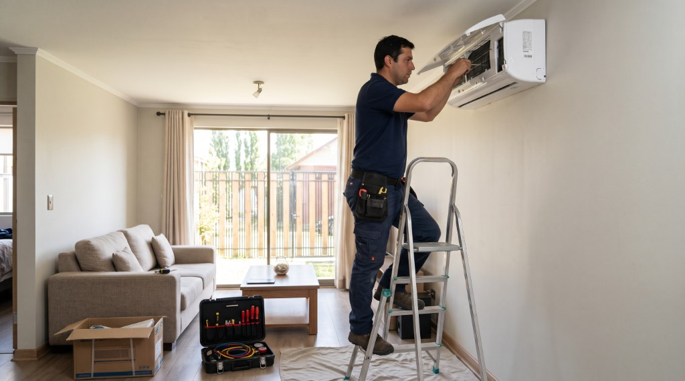
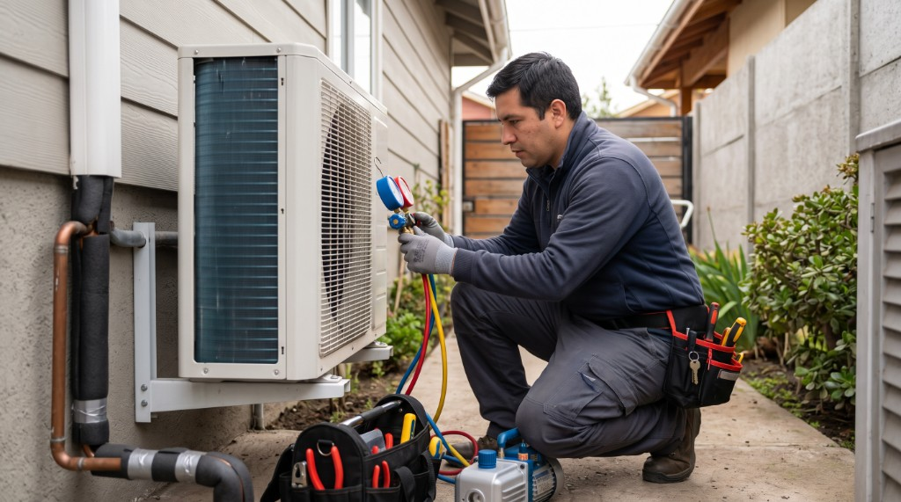
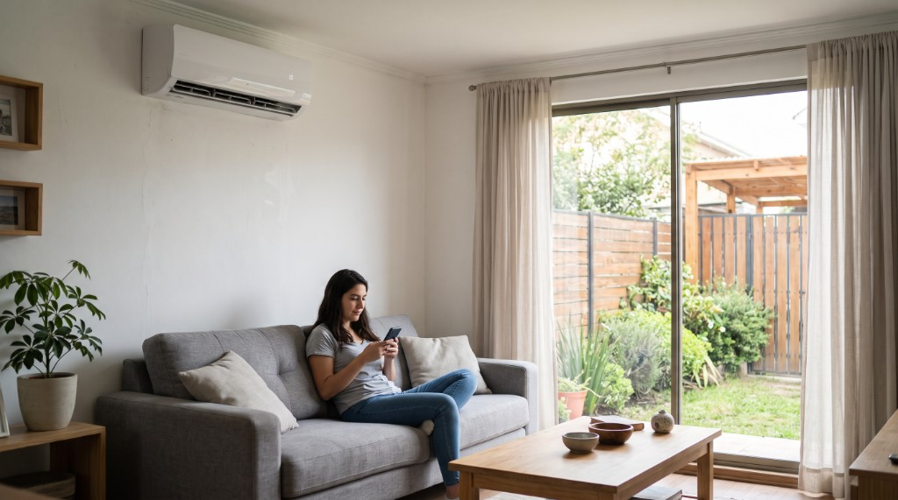

Aire Acondicionado Los Ángeles
Aire Acondicionado en Los Ángeles: instalación, mantención y calefacción limpia
Confort todo el año en la capital del Biobío: frío intenso cuando el verano supera los 33–35 °C, y calefacción Inverter limpia en inviernos húmedos con restricción de humos del PDA. Técnicos multimarca, materiales certificados y garantía escrita.
- Instalación en 24–48 hrs
- Equipos Inverter Bajo Consumo
- Bomba de vacío y cumplimiento SEC

Servicios
Climatización completa en Los Ángeles
Elige el servicio exacto que buscas. Cada página profundiza precios, proceso técnico y casos reales del Biobío.
Instalación Split Muro
Kit de cobre, bomba de vacío, pruebas de presión y asesoría de ubicación. Equipo llave en mano o instalación de retail.
Ver instalación →Mantención y limpieza
Sanitización antibacteriana, turbina, drenaje y consumo eléctrico. Clave antes del verano y del invierno húmedo.
Ver mantención →Reparación y carga de gas
Diagnóstico de fugas, R32/R410A con balanza digital y recuperación de rendimiento sin improvisaciones.
Ver reparación →Calculadora BTU
Estima la capacidad ideal según m², sol, aislación y tipo de techo típico de Los Ángeles.
Calcular BTU →Trabajo real
Instalación y servicio en terreno
Fotos de trabajos de instalación, mantención y confort residencial con Split Inverter.


Calefacción limpia · PDA Biobío
Inverter vs leña, pellet y parafina en Los Ángeles
Con el Plan de Descontaminación Atmosférica, la leña con humo visible queda limitada. El Split Inverter frío/calor es la alternativa limpia, silenciosa y eficiente para dormitorios y living.
| Sistema | Emisiones | Confort | Costo operativo referencial* | Restricción PDA |
|---|---|---|---|---|
| Split Inverter frío/calor | Sin humo ni MP2.5 | Estable, programable, silencioso | Bajo–medio (kWh CGE/Frontel) | Sin restricción |
| Estufa a pellet | Bajas si es certificada | Bueno; requiere stock de pellet | Medio | Generalmente permitida |
| Leña seca | Altas (humo visible) | Irregular; ensucia | Variable | Restringida en episodios |
| Parafina / kerosene | Interior + olor | Rápido pero seco e inseguro | Alto por litro | No recomendada |
*Referencia orientativa para un living de ~18–22 m² en Los Ángeles. El consumo real depende de aislación, BTU correctos y tarifa eléctrica. Cotiza con visita técnica para un estimado cerrado.
Diferenciación
Por qué elegirnos frente a instalaciones informales
En climatización, el atajo sale caro: una mala instalación reduce vida útil, dispara el consumo y anula garantías de marca.
-
Bomba de vacío obligatoria
Extraemos humedad y aire del circuito antes de liberar refrigerante. Así alargamos la vida del compresor.
-
Materiales certificados
Cobre, aislación y soportes profesionales. Sin remiendos que pierdan carga en pocas temporadas.
-
Marcas que instalamos
Anwo, Midea, Samsung, Clark, Daikin, LG, Khone y equipos de retail (Sodimac, Easy, Lider).
-
Cumplimiento normativo SEC
Trabajo eléctrico responsable, protecciones adecuadas y boleta o factura para tu tranquilidad.
Cobertura local
Atención en Los Ángeles y comunas cercanas
Servicio a domicilio en sectores urbanos y rurales, con agenda programada hacia comunas vecinas del Biobío.
Sectores de Los Ángeles
Atención programada
FAQ
Preguntas frecuentes sobre aire acondicionado en Los Ángeles
Respuestas directas con precios referenciales en pesos chilenos.
¿Cuánto cuesta instalar un aire acondicionado en Los Ángeles?
La instalación básica de un Split Muro parte desde $180.000 a $280.000 CLP, según metros de cañería, altura y complejidad. El equipo Inverter se cotiza aparte. Ver detalle de instalación.
¿Conviene un Inverter para calefaccionar en invierno?
Sí. Con restricción de humos del PDA, el Split Inverter frío/calor entrega calor limpio sin material particulado, ideal para dormitorios y living en Los Ángeles.
¿Cada cuánto hacer mantención?
1 o 2 veces al año. Limpieza profunda referencial desde $45.000 a $70.000 CLP por equipo. Ver mantención.
¿Qué BTU necesito?
Dormitorio 9–12 m² ≈ 9.000 BTU; living 16–22 m² ≈ 12.000–18.000 BTU. Usa la calculadora para ajustar sol y aislación.
¿Instalan equipos comprados en Sodimac o Easy?
Sí, siempre que cumplan condiciones técnicas y de garantía. También cotizamos equipos llave en mano Anwo, Midea, Samsung, Clark y Daikin.
¿Listo para climatizar tu hogar en Los Ángeles?
Envíanos el formulario y te orientamos con capacidad BTU, plazo de instalación y valor referencial.